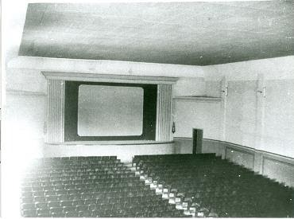
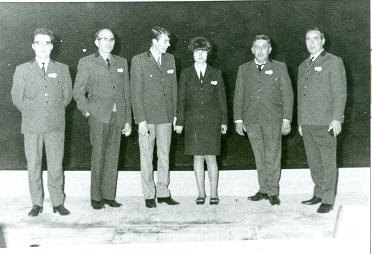
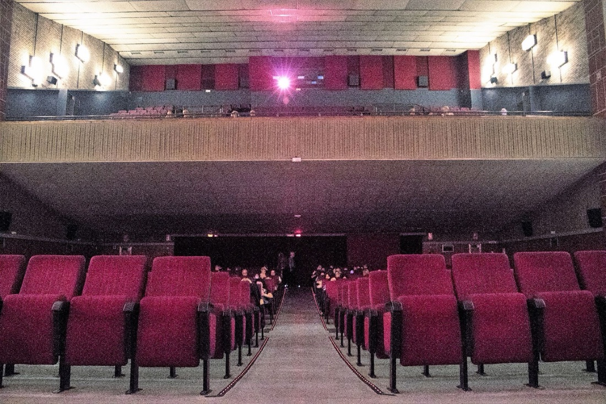

La nostra història
El 23 de desembre de 1967 My Fair Lady estrenava la pantalla del nou cinema Capri. Des d'aleshores, el porta la mateixa família.

Una sala per a un Prat que creixia
Joaquim Marimón, propietari del cinema Monmari, va tenir prou visió per intuir que el Prat creixeria cap al sud. Per això va comprar uns solars, a bon preu, en el que havia de ser un dels centres del poble: la incipient avinguda Verge de Montserrat.
Les obres van trigar set anys. En part es van pagar venent un altre solar de la mateixa avinguda, quan el carrer ja començava a créixer i els terrenys s'havien revalorat.
Quatre cines i una sola còpia
Al Prat hi havia quatre cines, i els seus empresaris es van associar per repartir-se les despeses i no fer-se la competència. L'Artesà i el Monmari feien pel·lícules per a tots els públics, i el Capri i el Moderno, per a adults.
Només es llogava una còpia de cada pel·lícula, així que cada cine la passava en un ordre diferent. A mesura que s'acabaven els rotlles, un noi, conegut afectuosament com «el noi del pase», portava les bobines d'un cine a l'altre. Sovint eren més grans que ell.

L'únic cine del Prat
La crisi no va trigar a arribar i, a poc a poc, els altres van anar tancant: primer l'Artesà, després el Monmari i, finalment, el Moderno.
Des de 1985 el Capri és l'únic cine que funciona al Prat, i una de les poques sales de gran format que queden al Baix Llobregat. El continua portant la família Marimón-Padrosa.

També fem cinema
La família Marimón-Padrosa també produeix pel·lícules amb Fermín Marimón PC. Entre les seves produccions hi ha Peraustrínia 2004, el primer llargmetratge d'animació rodat en català (Premi Sant Jordi de Cinematografia 1990), i Pactar amb el gat (2007).
Parlen de nosaltres
- Joan Marimón Padrosa, a la Wikipedia
- Peraustrínia 2004, a la Viquipèdia
- Pactar amb el gat, a la Wikipedia
- El Cine Capri a BuscaPrat